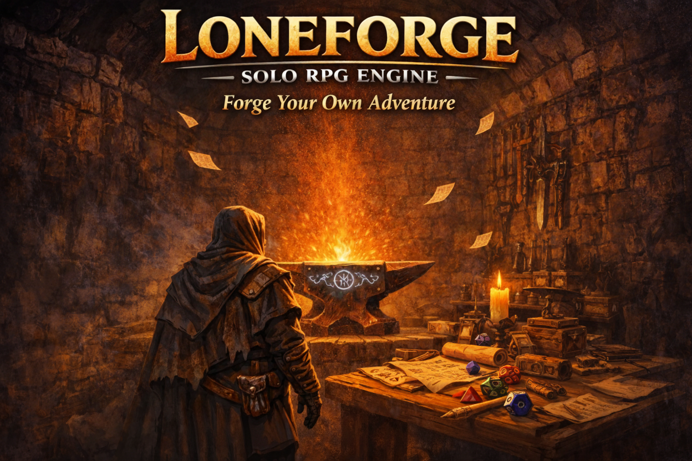
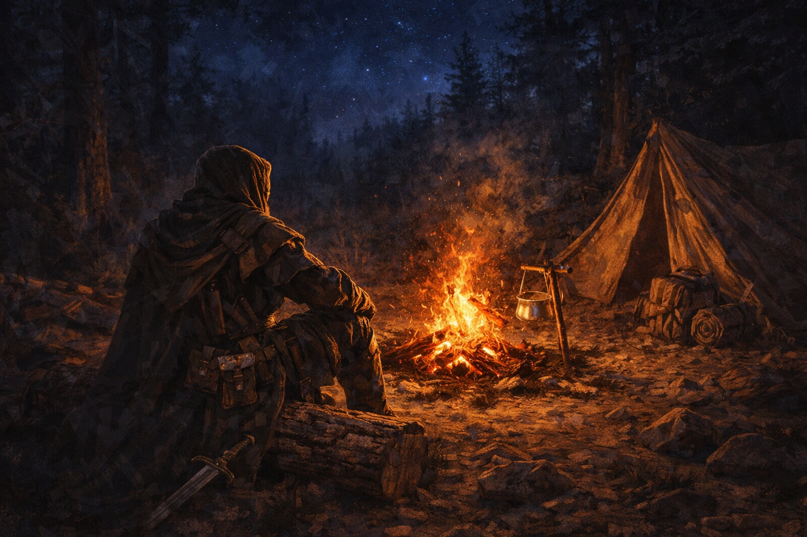
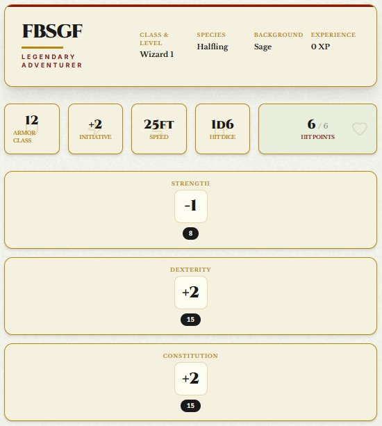
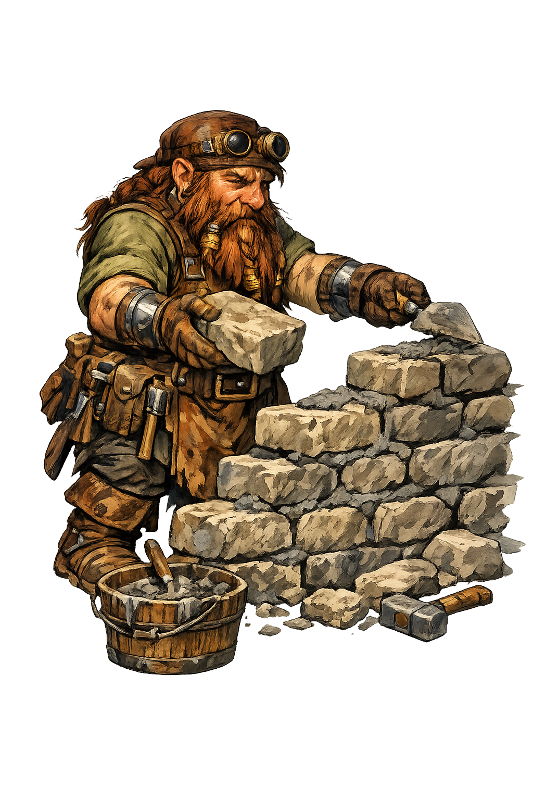
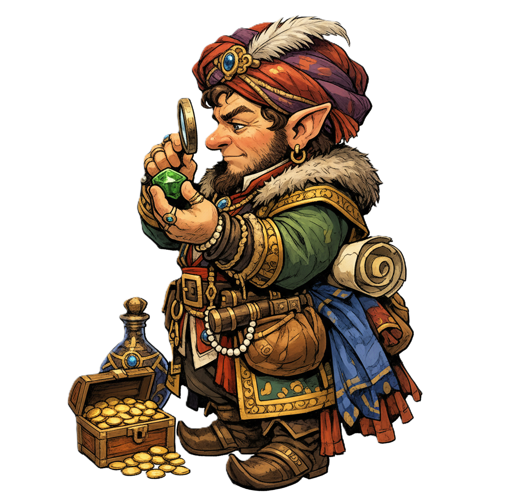

Your Solo 5E Adventure Begins Here
Forge your own path. No Dungeon Master required.
LoneForge is an all‑in‑one solo RPG engine for 5.5E adventurers.

LoneForge is a free browser‑based toolkit built specifically for solo 5E play. Inspired by solo TTRPG methodology, it combines every reference you need into a single, streamlined engine.
No more switching between fifteen open tabs for monster stats, NPC names, encounter tables, and campaign notes. Everything lives here.
LoneForge is free for every adventurer. If you enjoy it, you can support continued development — but it's yours either way.

Every tool a solo adventurer needs, forged into a single engine.
No tab switching. No lost notes. No missing stat blocks.
Create and manage your hero. Track ability scores, HP, AC, saving throws, spells, and equipment — built for 5E.



LoneForge is actively developed. Here is what has been forged, what is being hammered, and what lies on the anvil.
Oracle, NPC Generator, Bestiary (CR 0–4), Campaign Notes, base Character Sheet, Dungeon / Wilderness / Settlement tools.
Full level-up flow with class feature tracking, proficiency scaling, and spell slot management.
More dynamic dungeon, wilderness, and settlement generation — less static tables, more emergent narrative.
Roll for mundane and magical treasure — coins, equipment, potions, and rare artifacts.
Extending monster coverage to challenge higher-level adventurers.
Compatible with the 5.5E SRD (CC BY 4.0).
LoneForge is not affiliated with or endorsed by Wizards of the Coast.